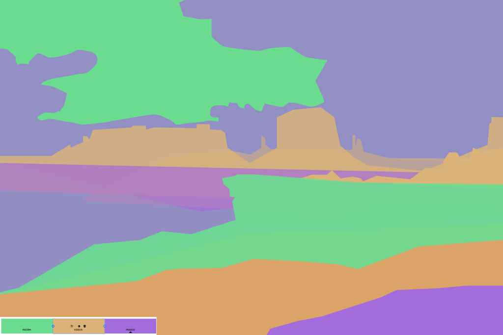

For this assignment I created a very bulbous eye using the pen tool on illustrator. Using a reference I found online I used the pen tool in order to follow the image and create this somewhat flat version of this very detailed eye. I chose a big eye to give myself room to work with so I can create an image without it being messy. I used layers to structure this art work, each part of the eye was a new layer, eyebrow, pupil, skin, etc. I tried to replicate shadows by using dark colors and playing with their opacity.I then exported it as a PNG for the web.

For the illustrated environment. I placed a photo of a real life canyon/deserted area on its own separate layer/. I locked it then I created new layers to create a foreground, middle ground, and background. I chose 3 triadic colors that I found using adobe color. I chose these colors because I wanted to do the opposite of the original image. THe canyon looked hot so I chose colors that were cooler. Due to the limited color choice I played around with opacity to create a range of colors all while keeping the original triadic three. I exported the final illustration as a PNG using export for screen.
